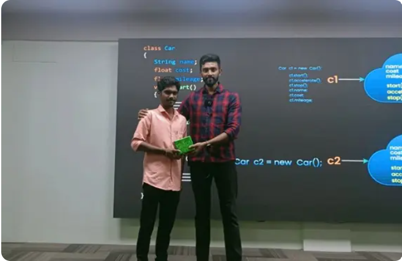
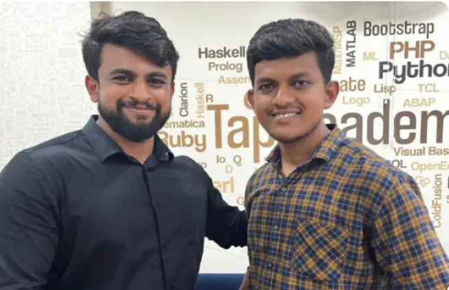
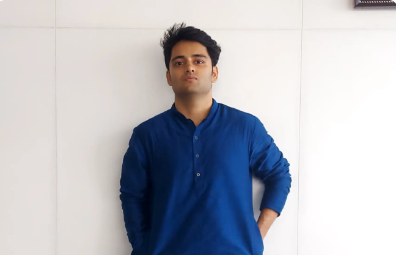

Our complete online training has made students learn to code anytime anywhere
& got placed in various Companies. Here are our few students placed at various
companies
Gowtham GMA warm thanks to the Tap Academy team. I am Gowtham GM from Tamilnadu, a 2024 passed-out student. I joined Tap Academy as a CSR student in the month of February. My journey with Tap Academy is quite different. The trainers at Tap Academy are skilled and experienced. They teach a lot of new concepts and help in learning programming languages from scratch. I am from the Computer Science branch, but the teaching at Tap Academy is structured in a way that makes it easy for students from all domains to understand the concepts and technology taught by the trainers. Finally, I got placed as a Software Engineer at Revature with a package of 3.25 LPA. The placement team helped me a lot in securing this job. Thank you to the entire Tap Academy team for helping me acquire this opportunity. |
 |
Gagan GRAfter joining Tap Academy, I have improved my programming skills, and my knowledge of core Java has also improved. Now, I am learning the Collection Framework, MySQL, HTML, and CSS in parallel. Through the TAI platform, I have enhanced my problem-solving skills. Additionally, the LMS makes it easy to watch all the recorded videos. They also provide recorded videos of frameworks like J2EE, Spring, Data Structures, etc. I got placed in Promantia Business Solutions for the role of Associate Technical Consultant with a package of 3 LPA. Thank you TAP ACADEMY for giving me this opportunity. |
 |
Aman KumarI got placed in Ribbon communication in CyberSecurity role with 8 LPA package. Enrolling at TAP Academy Institute has been one of the best decisions for my educational and professional growth. The institute offers a holistic learning environment that caters to various aspects of my development as a student and aspiring professional. The teachers at TAP Academy are incredibly knowledgeable and always willing to help. Their dedication to student success is evident in the personalized attention they provide. Whenever I faced challenges, I knew I could rely on my instructors to offer guidance and support, making the learning process smoother and more enjoyable. Thank you TAP ACADEMY for giving me this opportunity. |
 |